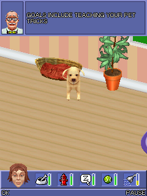

I did The Sims 2: Pets because my wife likes The Sims. It was an attempt to get her playing these old games I keep recovering. We already had a pet-training room running when the first useful report caught a sound that should have ended in less than a second.SIM00SIM01
Half a second, forever.
The phone report had 7,591 presented frames, balanced key-down and key-up counts, and no captured fatal error. It also created the same tiny AMR asset twice. Matching its 438 bytes to the original JAR identified a pet voice only 0.48 seconds long.SIM01SIM03
The game’s effect path requested a loop count of minus one. The compatibility player translated that directly into Android’s looping flag. The voice repeated indefinitely, so playback never completed and the guest never received its end-of-media event. The game could render perfectly well while its sound lifecycle was stuck.SIM01

The original 240×320 room after pet adoption, retained from the JVM guest probe in the later checkpoint. This is a historical host frame, not a screenshot from the phone report.
Open the image for the full original view.
SIM90Let it end.
For 0.1.1, we kept the repair specific: AMR effects with that infinite-loop request played once, then delivered completion. MIDI background music kept its loop. Changing every minus-one request would have stopped the pet voice by breaking the music.SIM02
The focused contract check used the original voice asset with a fake Android media player to verify one playback and the callback, alongside the separate MIDI loop. The original game JAR stayed unchanged. This was a documented host compatibility policy for this title’s effect path.SIM02
The same room, a new shell.
The later 0.1.2 integration retained the audio correction, original save stores and 240×320 game. Its normal controls and numeric keypad represented the original MIDP actions. Two touch targets could own the same action key without one release cancelling the other finger’s hold.SIM04SIM05
The inspected files also corrected our initial platform label. This is the J2ME MIDlet, running its original bytecode through MIDP services and Android DEX. The pet-room report and these fixes belong to that edition.SIM03
The saved record ends with the host still reaching the pet-adoption room and retaining the corrected audio behavior. My reason for picking the game was a bit less technical: my wife likes The Sims, and I was trying to share some of this recovery hobby with her.SIM00SIM04
About these records
The wife motivation is current owner recollection. The earlier phone report establishes original rendering and AMR requests, while the later fix notes identify the training-room scene. The displayed adoption-room image comes from a separate historical JVM probe. The corrected AMR behavior was checked with a fake Android media player; later APK phone playback and comfort were not certified by those host tests. The J2ME platform correction follows the actual guest identity in the supplied report.
The receipts
Selected report lines, investigation notes and owner recollections. Open a receipt for its source and scope.
SIM00 / Trying to get his wife playingOwner recollection
Source: Archive-building conversation / owner-supplied recollection
The located bridge is The Sims 2: Pets. This describes the motivation, not an acceptance test or a claim that his wife played it.
and also i did the sims 2 becuase of my wife. she lifes the sims and its an atteempt to get her to play these stupid games im recovering lol
SIM01 / The half-second pet voice that would not finishCheckpoint investigation notes
Source: Sims_2_Pets_Bridge_v0.1.2_PRIVATE_CHECKPOINT.zip / Sims_2_Pets_Bridge_v0.1.2_PRIVATE/FIX_NOTES_v0.1.1.txt · selected lines 5–19
WHAT DEVICE EVIDENCE SHOWS - Original game is rendering in the pet-training room. - Frame count 7591; key down/up 120/120; fatal error none. - Audio:create at 14:41:32.466 and 14:41:56.757, both audio/AMR bytes=438. - Exact original asset in JAR for 438 bytes is '88', AMR-NB duration 0.48sec. ROOT CAUSE (ORIGINAL BYTECODE + SHIM) - Original j.a(int) creates AMR players for original assets IDs 85-94, and MIDI player for ID 95. - Original c.c(int) (invoked from game's PetsApp.x(int) effect path) calls Player.setLoopCount(-1), then Player.start(). - v0.1.0 PhonePlayer translated -1 directly to Android MediaPlayer.setLooping(true), resulting in endless voice playback. - Because looping does not complete, PlayerListener.endOfMedia does not fire, preventing the guest's normal effect-completion handling.
SIM03 / The original game renders and asks for the tiny AMR assetCheckpoint investigation notes
Source: Sims_2_Pets_Bridge_v0.1.2_PRIVATE_CHECKPOINT.zip / Sims_2_Pets_Bridge_v0.1.2_PRIVATE/tests/on_device_v010/Sims2Pets-Bridge-v0.1.0-report-20261016-144216-392.txt · selected lines 1–7, 10–18, 89–91, 160–164
THE SIMS 2: PETS — ANDROID J2ME BRIDGE Bridge: 0.1.0 PRIVATE TEST Original guest: The Sims 2 - Pets / EA / MIDP 2.0 / CLDC 1.1 Original JAR SHA-256: 2a493c4b198ba47b70f895e6daff51d262e16ac4e6e3f099bb6f1e4b56fc6af9 Runtime type: original MIDlet bytecode converted to Android DEX, MIDP API compatibility adapter Not recreated gameplay; native guest size: 240 x 320 Timestamp: Fri Oct 16 14:42:16 CDT 2026 [... selected excerpt ...] Elapsed ms: 83459 State: game-rendering MIDlet: PetsApp Guest boot thread alive: false Current screen: n Presented frames: 7591 Key down: 120 key up: 120 Java heap free/total: 18902496/27883008 Fatal error: none captured [... selected excerpt ...] 14:41:32.463 | key | down -5 14:41:32.466 | audio-create | audio/AMR bytes=438 14:41:32.520 | key | up -5 [... selected excerpt ...] 14:41:56.458 | key | down 52 14:41:56.540 | key | up 52 14:41:56.742 | key | down 53 14:41:56.757 | audio-create | audio/AMR bytes=438 14:41:56.823 | key | up 53
SIM90 / Historical image / The Sims 2 Pets room after pet adoptionHistorical host capture
Source: Sims_2_Pets_Bridge_v0.1.2_PRIVATE/tests/jvm/evidence/10_after_pet_adoption.png
Reviewed original game image; no personal interface or image metadata. This is a retained desktop original-runtime capture, not a new phone screenshot.
Unchanged historical game framebuffer. Source member: Sims_2_Pets_Bridge_v0.1.2_PRIVATE/tests/jvm/evidence/10_after_pet_adoption.png Image SHA-256: 368911c854a8af9c1a7b947a558fcc7e7857a033f0697332d2676922abc97b74 The original 240×320 room after pet adoption, retained from the JVM guest probe in the later checkpoint. This is a historical host frame, not a screenshot from the phone report.
SIM02 / Play AMR effects once; preserve the looping musicCheckpoint investigation notes
Source: Sims_2_Pets_Bridge_v0.1.2_PRIVATE_CHECKPOINT.zip / Sims_2_Pets_Bridge_v0.1.2_PRIVATE/FIX_NOTES_v0.1.1.txt · selected lines 21–28, 30–41
CHANGE APPLIED - Only for audio/AMR variants, infinite (-1) loop requests are normalized to play once. The original audio data and all game bytecode remain unchanged. - The Android player now produces END_OF_MEDIA on effect completion; the guest retains control of cached/closed player cleanup. - The MIDI background track, audio/midi, retains its -1 looping behavior. - Added 'audio-loop-corrected' and 'audio-end' diagnostics. - No other UI, keypad, rendering or save behavior changed. [... selected excerpt ...] VERIFICATION - tests/test_audio_loop_policy.sh: PASS - tests/test_android_audio_contract.sh: PASS, with original asset 88 and a fake Android MediaPlayer; confirms one playback, completion event, and MIDI loop. - Signed v0.1.1 APK built and verified; same signing key and package name. - Guest JAR SHA-256 unchanged: 2a493c4b198ba47b70f895e6daff51d262e16ac4e6e3f099bb6f1e4b56fc6af9 LIMITATION - v0.1.1 corrected audio has not yet been played on physical Android device. - This targeted J2ME compatibility adjustment intentionally normalizes an original -1 loop request for AMR effects; no game file or guest logic edited.
SIM04 / Original bytecode and later host gameplay survive the UI changeCheckpoint investigation notes
Source: Sims_2_Pets_Bridge_v0.1.2_PRIVATE_CHECKPOINT.zip / Sims_2_Pets_Bridge_v0.1.2_PRIVATE/README_FIRST.txt · selected lines 30–53
WHAT WAS KEPT
- The ORIGINAL EA JAR, SHA-256:
2a493c4b198ba47b70f895e6daff51d262e16ac4e6e3f099bb6f1e4b56fc6af9
- MIDP runtime, 240x320 renderer, original game behavior, save stores,
sound assets, the v0.1.1 corrected short AMR voice behavior and MIDI loop.
- Original known mappings (see UI_INTEGRATION_v0.1.2.txt).
- Same Android application ID com.wakka.sims2pets and signing identity.
VERIFICATION COMPLETED ON BUILD HOST
Android API 35 javac, D8 min API 26, signed APK with verified v2/v3
signatures and zip alignment; identical signing certificate to v0.1.1;
original game's SHA matches inside APK; actual v1.1.1 library detected
inside classes.dex. Focused original AMR/MIDI loop tests passed.
Original guest JVM execution still reaches pet-adoption gameplay room;
pre-existing nonfatal JVM PNG metadata warning remains.
Geometry checks pass in tested 360/384/412dp portrait and
600/720/800/915/1000/1280dp landscape configurations.
REMAINING DEVICE VALIDATION
No Android device is attached in this build environment. The following
have NOT been verified on the v0.1.2 APK: physical thumb comfort, actual
hot switching, long touch holds, live reports, Android Back/return to Omni,
resumed save/game behavior, audio and graphics on Samsung hardware. Do not
interpret compilation, host geometry or earlier v0.1.0 video as that proof.SIM05 / A real keypad and action controls around the same gameCheckpoint investigation notes
Source: Sims_2_Pets_Bridge_v0.1.2_PRIVATE_CHECKPOINT.zip / Sims_2_Pets_Bridge_v0.1.2_PRIVATE/UI_INTEGRATION_v0.1.2.txt · selected lines 9–31
Normal (four cardinal directions; no guessed diagonal behavior) Up -1, Down -2, Left -3, Right -4, pad center -5. Left group: L SOFT -6, * 42, 0 48. Right group: ACTION -5, R SOFT -7, # 35. Two separately touch-owned ACTION (-5) targets for two-handed convenience; releasing one does not release the other while held. Original keypad replaces normal pad (no separate D-pad needed): 1=49, 2=50/UP, 3=51 4=52/LEFT, 5=53/FIRE, 6=54/RIGHT 7=55, 8=56/DOWN, 9=57 *=42, 0=48, #=35 L soft=-6 and R soft=-7 are independently available on either side. MIDP getGameAction maps number 2/4/6/8/5 to original UP/LEFT/RIGHT/DOWN/FIRE. Numeric mode removes duplicate * 0 # action columns to reduce clutter. The touch deck is made by the shared BridgeControls.makeKeypad standard component with an alternate reduced softkey action spec. Physical original mappings remain from v0.1.1: Android DPAD_UP/-1, DPAD_DOWN/-2, LEFT/-3, RIGHT/-4, DPAD_CENTER/ENTER/BUTTON_A/-5; KEYCODE_STAR/42, POUND/35, MENU/BUTTON_X/-6, BUTTON_B/BUTTON_Y/-7, numeric 0..9/ASCII 48..57. Android KEYCODE_BACK is NEVER mapped to guest -7.